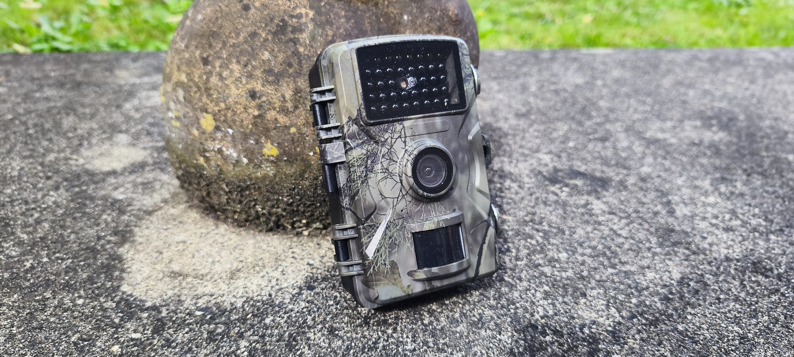

Monitoring specific objects or species such as pests in the field is becoming increasingly important for environmental management, biosecurity, and infrastructure protection.
However, many of these monitoring needs exist in remote and challenging environments, where traditional solutions simply do not perform well.
The Challenge of Remote Monitoring
In theory, deploying a camera with AI detection sounds straightforward. In reality, the challenge is far more complex when systems need to operate in the field.
Remote environments often come with:
- Limited or no reliable power supply
- Weak, intermittent, or non-existent internet connectivity
- Harsh weather and environmental conditions
- Difficult access for maintenance and servicing
Most off-the-shelf camera systems are designed for urban or well-connected environments. They rely heavily on cloud processing, constant connectivity, and stable power - making them unsuitable for remote deployment.
Where Standard Solutions Fall Short
Traditional AI camera systems typically:
- Stream large volumes of data to the cloud for processing
- Require consistent internet connectivity
- Consume relatively high power
- Lack flexibility for integration with other sensors or systems
In remote scenarios, these limitations quickly become critical issues. High data transmission is not practical, and reliance on cloud processing introduces delays and failure points.
MAKI's Approach: Intelligence at the Edge
To address these challenges, MAKI has developed a custom IoT AI camera system designed specifically for remote environments.
While the camera may appear simple externally, the internal design is purpose-built to operate efficiently under constraints.
Key features include:
- Edge AI processing - detection and classification are performed directly on the device, reducing reliance on cloud services
- Low-power system design - optimised for operation with limited energy sources such as batteries or solar
- Efficient data communication - only relevant data is transmitted, minimising bandwidth usage
- Robust hardware integration - designed to operate reliably in harsh field conditions
This approach ensures the system can continue to function even with limited connectivity, while maintaining high detection capability.

A Practical Solution for Real-World Applications
The IoT AI camera can be trained to detect specific targets, such as:
- Pest species
- Wildlife activity
- Objects of interest in environmental or infrastructure settings
By processing data locally and only transmitting key information, the system enables:
- Faster decision-making
- Reduced operational costs
- Improved reliability in remote deployments
Beyond Cameras: A Broader Monitoring Ecosystem
This project is part of a wider capability at MAKI to design and build custom environmental monitoring systems.
In addition to AI cameras, MAKI develops:
- Autonomous water monitoring and sampling buoys
- Remote sensing stations for environmental data collection
- Custom USVs (Unmanned Surface Vehicles) and ROVs (Remotely Operated Vehicles)
- Integrated IoT platforms combining sensors, communication, and data processing
Each system is tailored to the specific requirements of the project, rather than relying on off-the-shelf configurations.
Designed for the Environment, Not Just the Specification
At MAKI, the focus is on delivering solutions that work in real-world conditions.
Remote environments impose constraints that cannot be ignored. Power, connectivity, and durability are not secondary considerations - they define the system design from the outset.
By combining in-house hardware development with software and AI capability, MAKI delivers systems that are:
- Practical
- Reliable
- Scalable
- Fit for purpose
Get in Touch
If you are working on a monitoring challenge in a remote or constrained environment, MAKI can help design a solution that meets your specific requirements.
Feel free to get in touch to discuss your project.